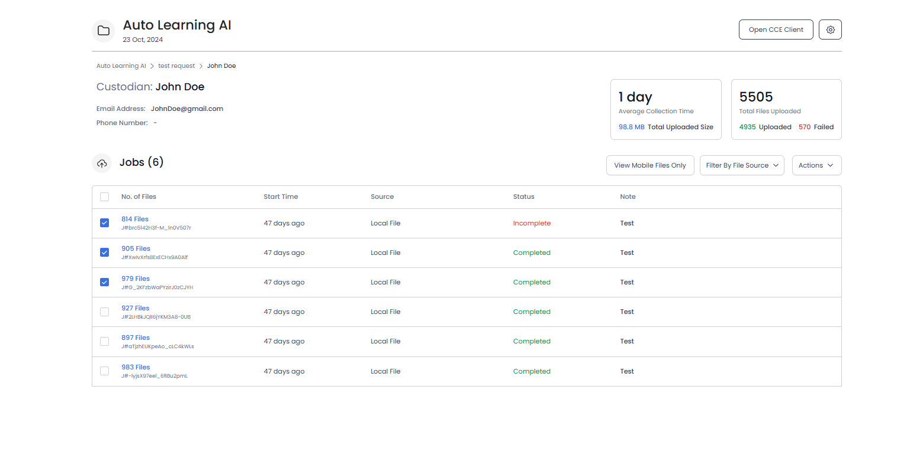

The Verification log is … // TO ADD BRIEF DESCRIPTION
You can
generate Verification logs for the following:
You can select all or a few to be included in the log.
To generate the log of projects, open the Projects page and select the projects that need to be included in the log.
Click on Actions -> Create Verification Log.

A CSV file will be automatically downloaded on your system. Open the file to view your log.
To generate the log of requests, open a project’s detailed view and select the requests that need to be included in the log.

Click on Actions -> Create Verification Log.
A CSV file will be automatically downloaded to your system. Open the file to view your log.
To generate the log of custodians, open a request’s detailed view and select the custodians that need to be included in the log.

Click on Actions -> Create Verification Log.

A CSV file will be automatically downloaded on your system. Open the file to view your log.
To generate the log of jobs (and files in them), open a custodian’s detailed view and select the jobs (files) that need to be included in the log.
Click on Actions -> Create Verification Log.

A CSV file will be automatically downloaded on your system. Open the file to view your log.